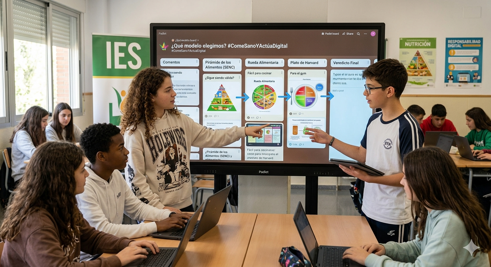

El Reto
¿Alguna vez te has preguntado por qué antes nos decían que el pan era la base de todo y ahora nos dicen que lo son las verduras? En esta actividad vas a convertirte en un analista de datos nutricionales.
Vas a comparar los tres modelos que han guiado al mundo y decidirás cuál es el que realmente te ayuda a conseguir tus objetivos (energía para el gimnasio, piel sana, rendimiento en clase, plan deportivo, etc.).

Paso 1: La Galería del Tiempo (Investigación)
Observa detenidamente estos tres modelos. No te quedes solo con los dibujos, fíjate en qué alimentos están abajo (en la base) o cuáles ocupan más espacio. Los enlaces están disponibles en RETROALIMENTACIÓN.
Modelo A: La Pirámide de los Aliementos (SENC,2016). Es el modelo clásico usado en España.
- ¿Qué tipo de alimentos se encuentran en la base de la pirámide de los alimentos y por qué deben consumirse con mayor frecuencia?
- ¿Qué grupos de alimentos aparecen en la parte superior de la pirámide y por qué se recomienda un consumo ocasional?
- Explica la diferencia entre consumir alimentos de la base y del vértice de la pirámide en relación con la salud.
- ¿Cómo se relaciona la pirámide de los alimentos con los hábitos de vida saludable (actividad física, hidratación, etc.)?
- Imagina un día de tu alimentación: ¿crees que sigues las recomendaciones de la pirámide? Justifica tu respuesta.
Modelo B: La Rueda Alimentaria. Divide los alimentos por su función (energéticos, plásticos, reguladores). Es muy visual, pero ¿te dice qué cantidad poner en tu plato de comida hoy?
- ¿Cuántos grupos de alimentos aparecen en la rueda de los alimentos y qué caracteriza a cada uno de ellos?
- ¿Qué función tienen los alimentos energéticos, plásticos (constructores) y reguladores en nuestro organismo?
- ¿Por qué es importante consumir alimentos de todos los grupos de la rueda de los alimentos?
- Pon dos ejemplos de alimentos de cada tipo: energéticos, constructores y reguladores.
- Observando la rueda de los alimentos, ¿crees que tu dieta es equilibrada? Explica qué cambios podrías hacer para mejorarla.
Modelo C: El Plato para Comer Saludable (Harvard). Es el "rey" actual de la ciencia. Divide un plato real por porcentajes.
- ¿Cómo se distribuyen los alimentos en el Plato de Harvard y qué proporción ocupa cada grupo (verduras, proteínas, cereales, etc.)?
- ¿Por qué el Plato de Harvard recomienda que la mitad del plato esté formada por verduras y frutas?
- ¿Qué tipo de proteínas recomienda el modelo (animales, vegetales) y cuáles se deben limitar?
- ¿Qué diferencias existen entre los cereales integrales y los refinados según el Plato de Harvard?
- Diseña un menú de comida (almuerzo o cena) siguiendo el modelo del Plato de Harvard y explica por qué es equilibrado.
Paso 2: Análisis Crítico (Trabajo en equipo)
Abrid vuestro cuaderno digital (Padlet) y completad la tabla comparativa.
Paso 3: El Veredicto (Tu conclusión)
De manera individual, escribe una breve reflexión de 5 líneas respondiendo a esto:
¿Qué objetivo pretendo conseguir? y ¿Cuál de estos modelos voy a seguir a partir de ahora y por qué?"
"Si mi objetivo es tener un cuerpo sano, energía para mis hobbies y evitar la inflamación (granitos, pesadez), ¿cuál de estos modelos voy a seguir a partir de ahora y por qué?"
| Alumno/a | Objetivo prioritario | Modelo que voy a seguir | Razones |
| 1. | |||
| 2. | |||
| 3. | |||
| 4. |
Para completar vuestra tabla, utilizad exclusivamente estas fuentes fiables (¡nada de blogs de influencers sin base científica!):
Sobre la Pirámide (SENC):
Web oficial de la Sociedad Española de Nutrición Comunitaria.
Punto clave: Fijaos en la "cúspide" (lo que se debe comer opcionalmente).
Sobre el Plato de Harvard:
El Plato para Comer Saludable (Web oficial en español)
Vídeo recomendado: El plato de Harvard Educacyl Portal de Educación (Explicación rápida)
Sobre la Rueda de los Alimentos: